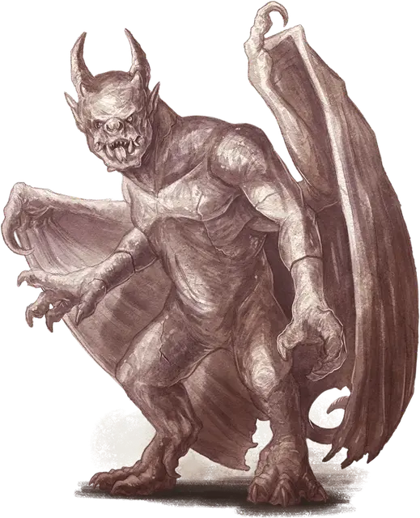

Горгулья
Gargoyle
Средний Элементаль, хаотично-злой

Класс Доспеха 15 (природный доспех)
Хиты 52 (7к8 + 21)
Скорость 30 футов, летая 60 футов
| мод | спас | ||
|---|---|---|---|
| СИЛ | 15 | +2 | +2 |
| ЛОВ | 11 | +0 | +0 |
| ТЕЛ | 16 | +3 | +3 |
| мод | спас | ||
|---|---|---|---|
| ИНТ | 6 | −2 | −2 |
| МДР | 11 | +0 | +0 |
| ХАР | 7 | −2 | −2 |
Сопротивление урону дробящий, колющий, рубящий от немагических атак, кроме нанесённых адамантиновым оружием
Иммунитет к урону яд
Иммунитет к состояниям отравление, окаменение, истощение
Чувства тёмное зрение 60 футов, пассивное Восприятие 10
Языки Терран
Опасность 2 (450 опыта)
Бонус мастерства +2
Среда обитания Город, Подземье
Особенности
Обманчивая внешность. Пока горгулья остаётся без движения, она неотличима от неживой статуи.
Осколки стихийного зла. Проходя по своему каменному царству, Огремох, злой Князь Стихийной Земли, оставляет за собой след из осколков раздробленных камней. Эти наполненные частицами сознания осколки входят в резонанс с сущностью владыки стихии и за несколько лет принимают человекоподобную форму, становясь в итоге ужасными, безжалостными горгульями.
Огремох не создаёт их намеренно, но они являются материальным воплощением его злой сути. Горгульи — насмешка над стихией Воздуха, которую презирает Огремох. Это тяжеловесные существа из ожившего камня, которые всё же способны летать. Подобно своему создателю, они ненавидят существ воздушной стихии, в том числе ааракокр, и с наслаждением используют любую возможность, чтобы их уничтожить.
На своём родном плане горгульи вырезают каменные глыбы, которые Огремох швыряет в Аакуа — владения аарококр и великодушных Герцогов Ветра, которым служит крылатое племя Стихийного Плана Воздуха.
Действия
Мультиатака. Горгулья совершает две атаки: одну укусом и одну когтями.
Укус. Рукопашная атака оружием: +4 к попаданию, досягаемость 5 футов, одна цель. Попадание: Колющий урон 5 (1к6 + 2).
Когти. Рукопашная атака оружием: +4 к попаданию, досягаемость 5 футов, одна цель. Попадание: Рубящий урон 5 (1к6 + 2).
Описание
«ДОБРО ПОЖАЛОВАТЬ В ВЕЛИКУЮ МРАЧНУЮ РЫТВИНУ, ЖЕМЧУЖИНУ ВНУТРЕННИХ ПЛАНОВ. ОТНЫНЕ ВЫ — РАБЫ МОГУЩЕСТВЕННОЙ И МИЛОСЕРДНОЙ ХАТУН ЗАФАРА АЛЬ-ЙИЛЬ ДЖИН ЗАРЕЙН, КОРОЛЕВЫ ПЕНИСТЫХ ГЛУБИН, ВЕРХОВНОЙ ЖРИЦЫ АЛМАЗНОГО ХРАМА, ЗАЩИТНИЦЫ МАЛАХИТОВОГО СКИПЕТРА, И ПРОЧАЯ, И ПРОЧАЯ»
— ОБЫЧНОЕ ПРИВЕТСТВИЕ ГОРГУЛЬИ-СЕНЕШАЛЯ
Облик безжизненных горгулий, украшающих вершины величественных зданий, навеян этими злобными существами стихии земли, похожими на гротескные дьявольские статуи. Горгулья таится среди каменных стен и руин, неподвижная, подобно каменным скульптурам, и наслаждается тем ужасом, который она вселяет, когда оживает, и той болью, которую причиняет своим жертвам.
Оживший камень. Горгульи гнездятся на утёсах и скалах, а также на выступах в пещерах. Они обитают на городских крышах, подобно стервятникам, примостившись среди высоких каменных арок и контрфорсов замков и соборов, и способны сидеть настолько смирно, что выглядят безжизненными. В таком состоянии горгулья может находиться годами, что делает её идеальным стражем.
Зловещая репутация. Горгульи известны своей жестокостью. Статуи в виде горгулий присутствуют в архитектуре многих культур, и они призваны отпугивать злоумышленников. Несмотря на то, что это всего лишь статуи, среди них могут затаиться настоящие горгульи, поджидающие своих жертв. Со скуки горгулья может ловить и мучать птиц и грызунов, но чем дольше она ждёт, тем сильнее жаждет навредить разумным существам.
Безжалостные слуги. Хитрые существа с лёгкостью могут заставить горгулий служить себе. Им нравятся простые задачи, такие как охрана хозяйского дома, пытки и убийство нарушителей, в общем, всё, что связано с минимумом усилий и максимум боли и насилия.
Из-за склонности к беспричинному хаосу и разрушению горгульи иногда служат демонам. Могущественные заклинатели также без труда привлекают горгулий для охраны ворот и стен. Горгульи обладают терпением и стойкостью камня, и годами могут служить даже жесточайшему хозяину, не выражая недовольства.
Стихийная натура. Горгулье не нужен воздух, еда, питьё и сон.